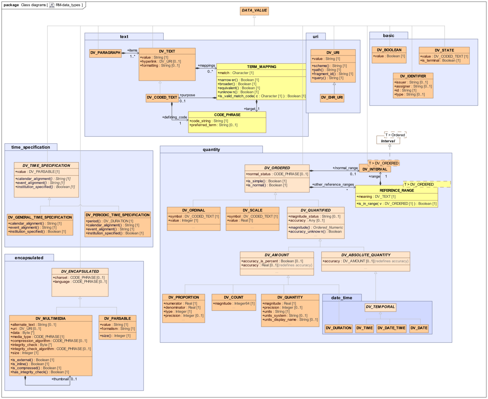

Data mapping types This chapter describes how these data-types are convertable, they are not recommendations to how fields should be modeled to fit to each other. The spec covers all types of mappings, also those who fit partly. To determine which types match we recommend reading the specification anyhow, since the amount of fields mappable between two data-types determine how good these match. If there is consensus, this can be also added to the spec as recommendations. Mappings between two data values are executed depending on the data type of the element. As an example if a period is provided FHIRconnect maps this period to an interval in the corresponding path in openEHR, if it’s a valid data type. If no valid data-type is provided these could be transformed into another element e.g. the period start into a DV_DATE_TIME. This is up to providers how strict or relaxed they want to design their engine. This also includes some of the abstract types if they correlate to a FHIR data-type. There is also some mappings from the Common Information Model contained like a PARTY_IDENTIFIED mapping. Primitive mappings like integers to integers, strings to string etc. are left out due to being straight forward. If a section exists (like for String) these addresses more complex matters and not the basic string-to-string mapping.  Figure 1. openEHR specification Dosage and Timing Both dosage and timing have no 1-to-1 data type in openEHR. Dosage relates to an Dosage. Timing relates to several object including HISTORY, Timing-daily and Timing non-daily. As of now, this was covered with a PROGRAMMED_MAPPING, but both should be covered in more detail as part of the next version of FHIRconnect. Deprecated This is the old way (v0.9) of mapping using static types, since the information is derivable from the instances of FHIR and openEHR this static typing is deprecated. It creates more mapping fields and makes users required to map each field possible in a data type manually. Type ID / FHIR openEHR Primitive "FLAT / FHIR" Attributes Pairs QUANTITY DV_QUANTITY true magnitude / value, unit / unit QUANTITY DV_ORDINAL true ordinal / value, value / unit, code / code QUANTITY DV_COUNT true (direct) DATETIME DV_DATE_TIME true (direct) CODEABLECONCEPT DV_CODED_TEXT false nested / coding, value / text CODING CODE_PHRASE true code / code, terminology / system STRING DV_TEXT true (direct) DOSAGE NONE false (special) Mapping types String